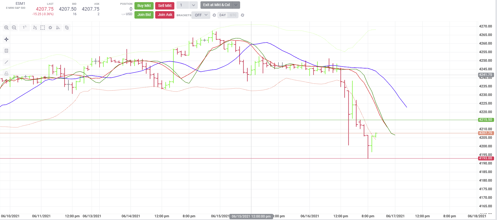

Alligator
Using shifts to Define the Alligator
The Alligator is a classic indicator based on the idea that markets spend most of their time in a horizontal motion and about 15-30% of the time trending. Different interactions of its three SMA plots are said to help identify a coming trend and predict its direction. Here's the basic definition:
- The Jaws are a 13 period SMA shifted into the future by 8 bars.
- The Lips are an 8 period SMA shifted into the future by 5 bars.
- The Teeth are a 5 period SMA shifted into the future by 3 bars.
Using the Indicator's shifts property, and the builtin SMA tool, we can easily accomplish the Alligator. shifts allow us to define bar-offsets on the X axis into the past or future on a plot-by-plot basis.
const predef = require("./tools/predef");
const SMA = require("./tools/SMA");
class Alligator {
init() {
this.jaws = SMA(this.props.jaws)
this.lips = SMA(this.props.lips)
this.teeth = SMA(this.props.teeth)
}
map(d) {
const jaws = this.jaws(d.value())
const lips = this.lips(d.value())
const teeth = this.teeth(d.value())
return {
jaws, lips, teeth
}
}
}
module.exports = {
name: "Alligator",
description: "Alligator",
calculator: Alligator,
params: {
jaws: predef.paramSpecs.period(13),
lips: predef.paramSpecs.period(5),
teeth: predef.paramSpecs.period(8)
},
plots: {
jaws: { title: 'Jaws' },
lips: { title: 'Lips' },
teeth: { title: 'Teeth' }
},
tags: [predef.tags.MovingAverage],
schemeStyles: {
dark: {
jaws: { color: 'blue' },
lips: { color: 'green' },
teeth: { color: 'red' }
}
},
//we can use shifts to offset our bars. Negative values would be into the past.
shifts: {
jaws: 8,
lips: 5,
teeth: 3
}
};

Generated using TypeDoc